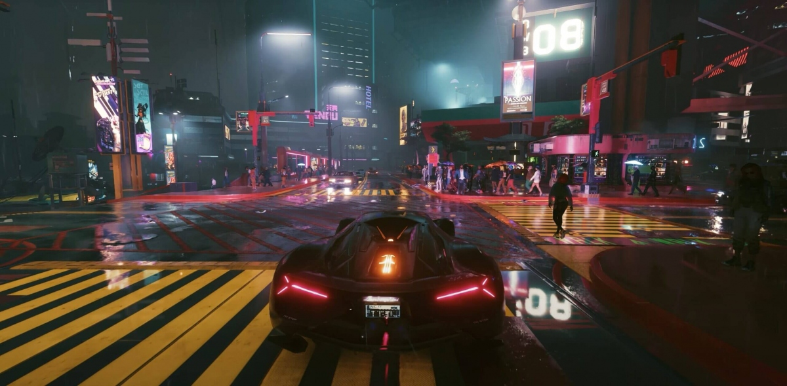

Cyberpunk 2077


Cyberpunk 2077 — компьютерная игра в жанре action-adventure в открытом мире, разработанная и изданная польской студией CD Projekt. Действие происходит в 2077 году в вымышленном североамериканском городе Найт-Сити из вселенной Cyberpunk.
Минимальные требования:
- ОС: Windows 10 64-bit
- Процессор: Core i7-6700 или Ryzen 5 1600
- ОЗУ: 8 GB
- Видеокарта: Geforce GTX 1060 6GB или Radeon RX 580 8GB или Arc A380
- Место: 70 GB
Рекомендуемые требования:
- ОС: Windows 10 64-bit
- Процессор: Core i7-12700 или Ryzen 7 7800X3D
- ОЗУ: 16 GB
- Видеокарта: Geforce RTX 2060 Super или Radeon RX 5700 XT или Arc A770
- Место: 50 GB